TECHNICAL STAFF
テクニカルスタッフ募集
音響・照明・映像などの技術で、 イベントの空間をつくる仕事です。
主な業務
- 音響・映像機材の設営・調整
- カメラ・スイッチャー操作
- オンライン配信対応
- 本番中のオペレーション・撤去
歓迎する方
- 機材や配信に興味がある方
- チームで働く仕事が好きな方
- 現場対応力を身につけたい方
経験やスキルに応じて、アシスタント → メインオペレーター → チーフオペレーター → テクニカルディレクターを目指すこともできます。
RECRUIT
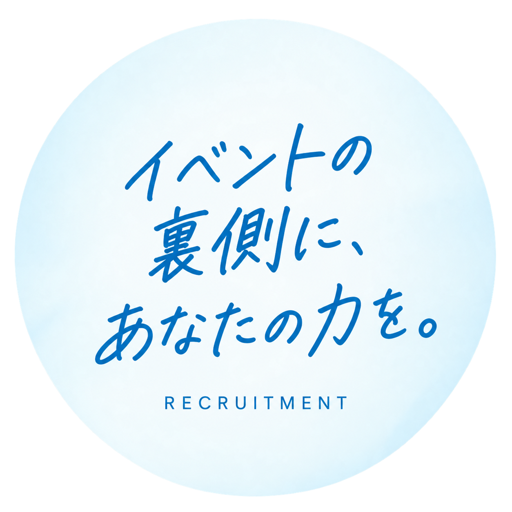
JOB
それぞれの専門性で、イベントの成功を支えます。
音響・照明・映像などの技術で、 イベントの空間をつくる仕事です。
経験やスキルに応じて、アシスタント → メインオペレーター → チーフオペレーター → テクニカルディレクターを目指すこともできます。
イベントの進行・運営を支え、 スムーズな現場づくりを行う仕事です。
未経験の方でも、現場で業務を覚えていただける環境です。
STAFF VOICE
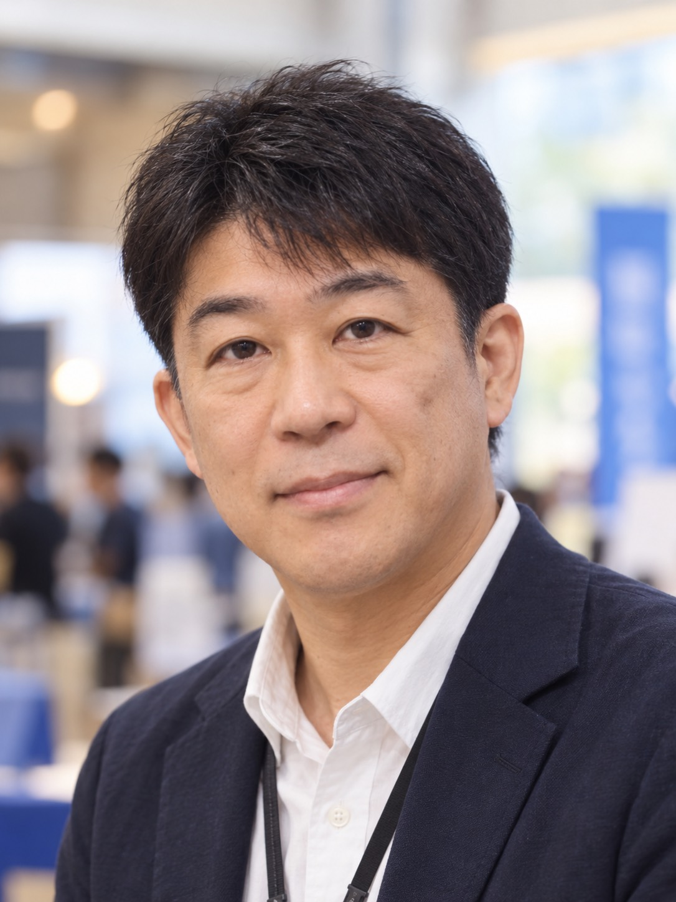
音響・映像・配信など幅広い現場に関わりながら、実践を通して着実に成長できます。
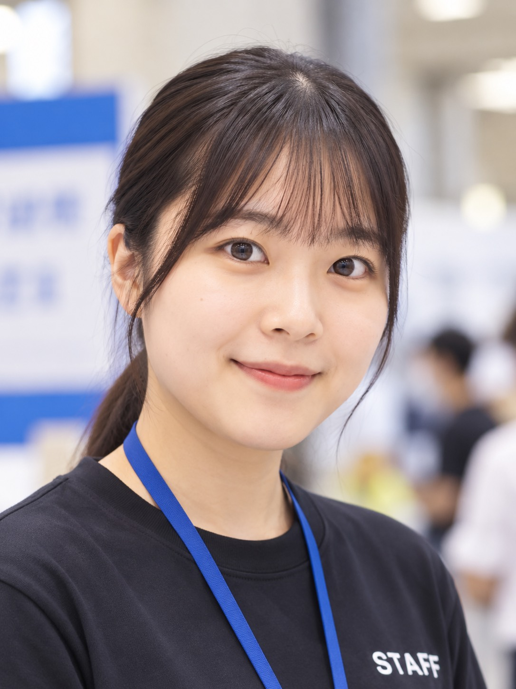
先輩スタッフのサポートがあり、受付や案内などを通して現場での対応力が身につきます。
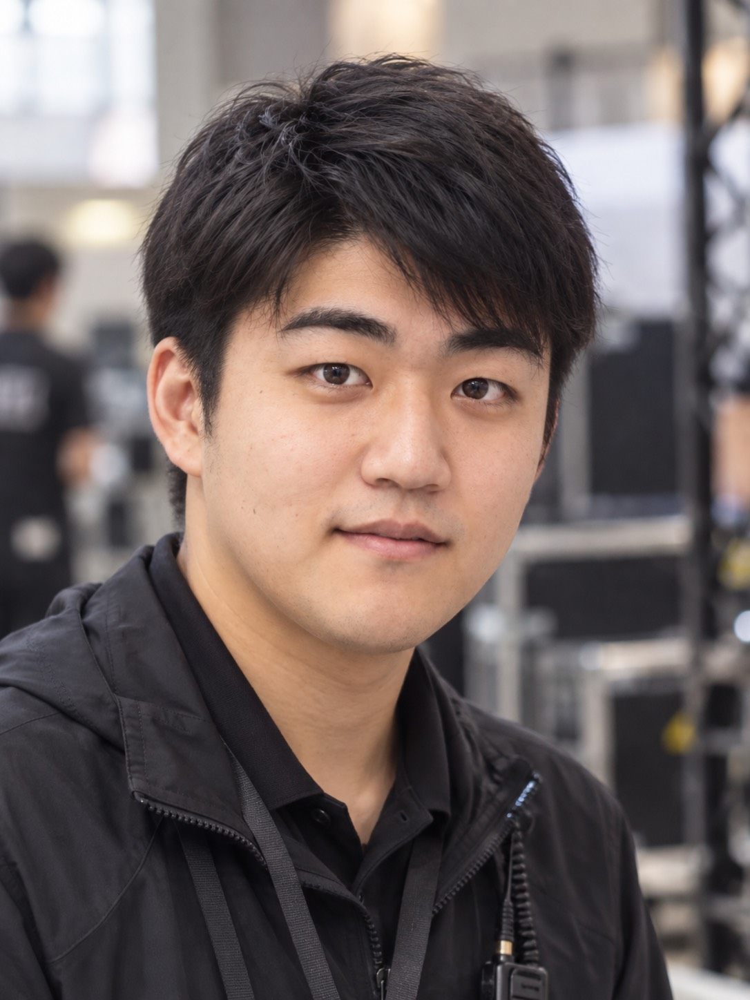
責任ある現場に携わる中で、判断力と対応力を高めながら技術者として経験を積めます。
シフトの柔軟さがあり、参加者対応や会場運営を通して人と関わる楽しさを感じられます。
GALLERY
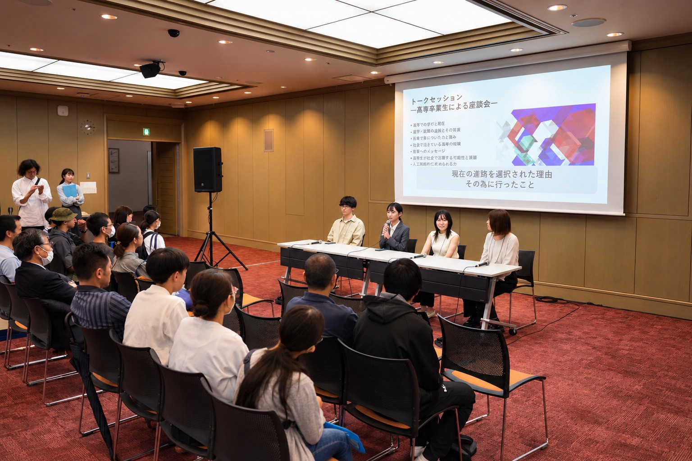
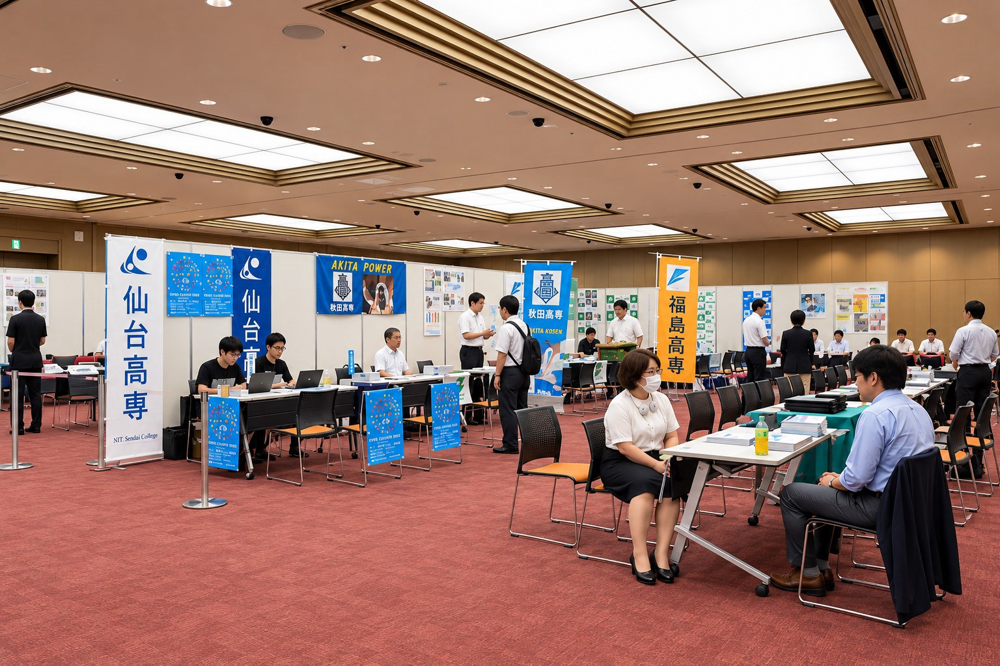
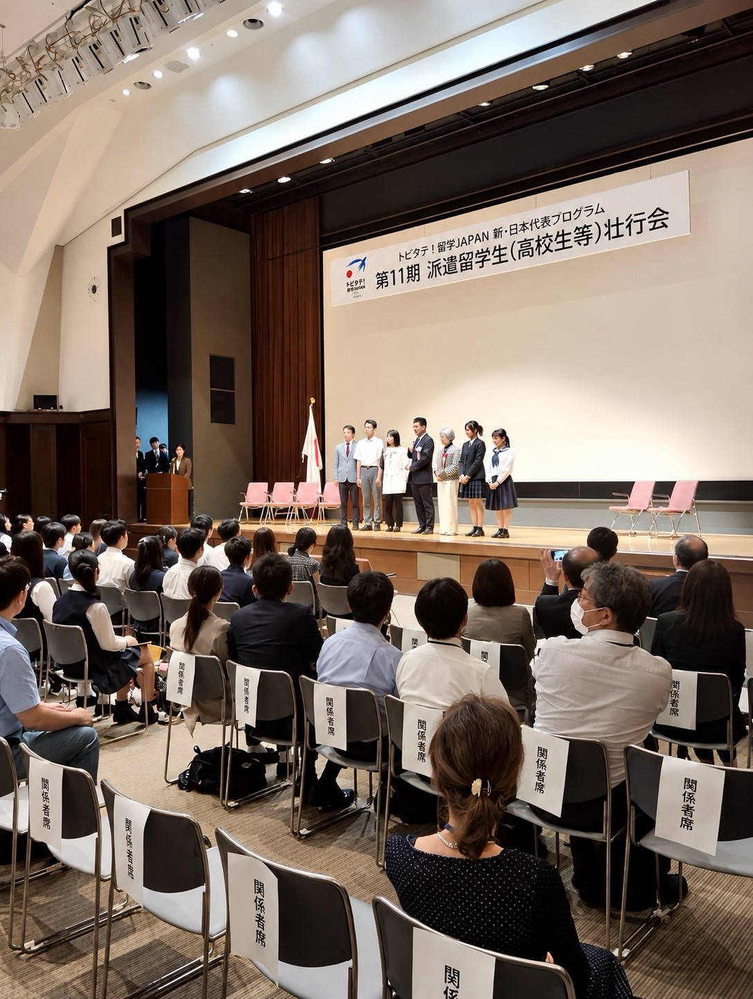

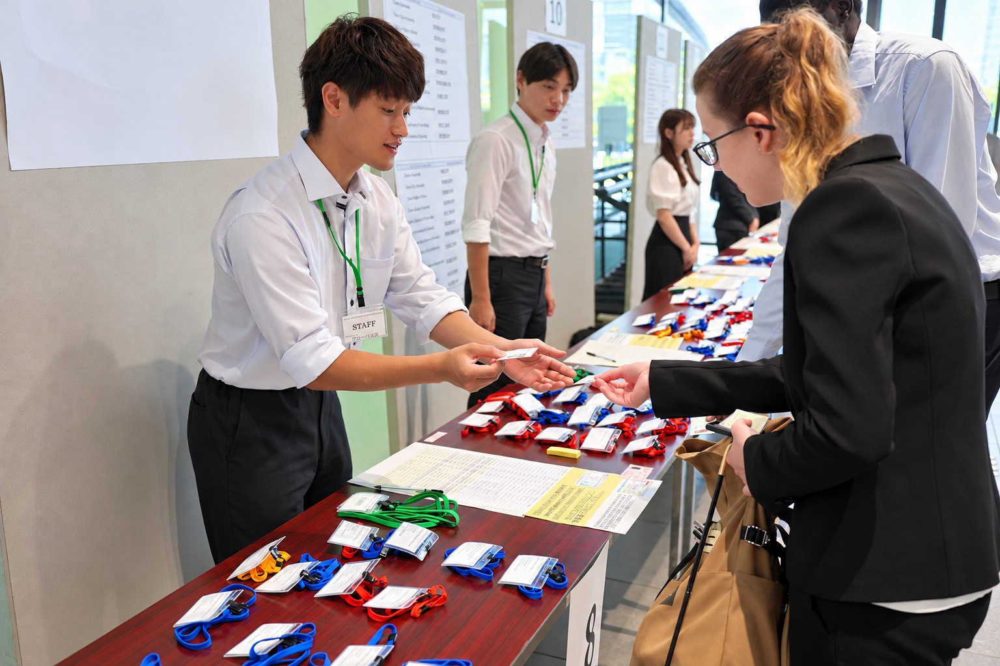

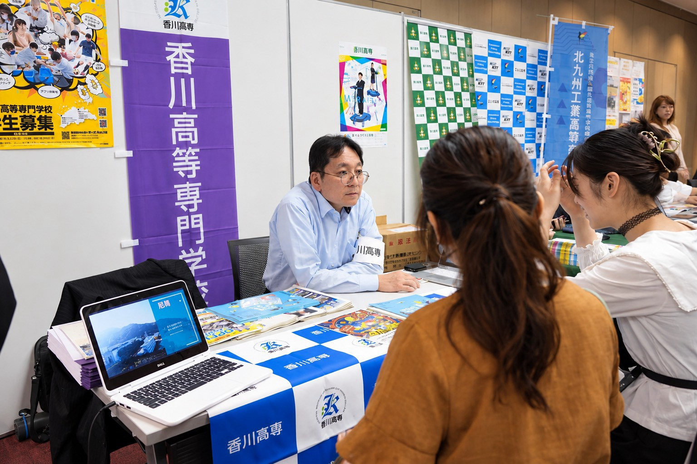
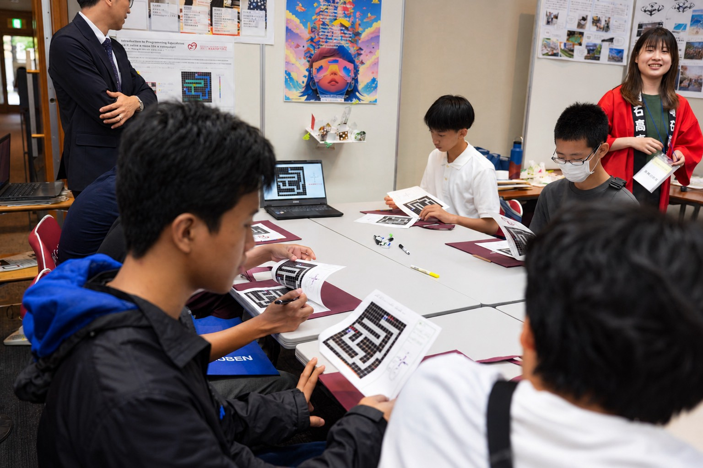
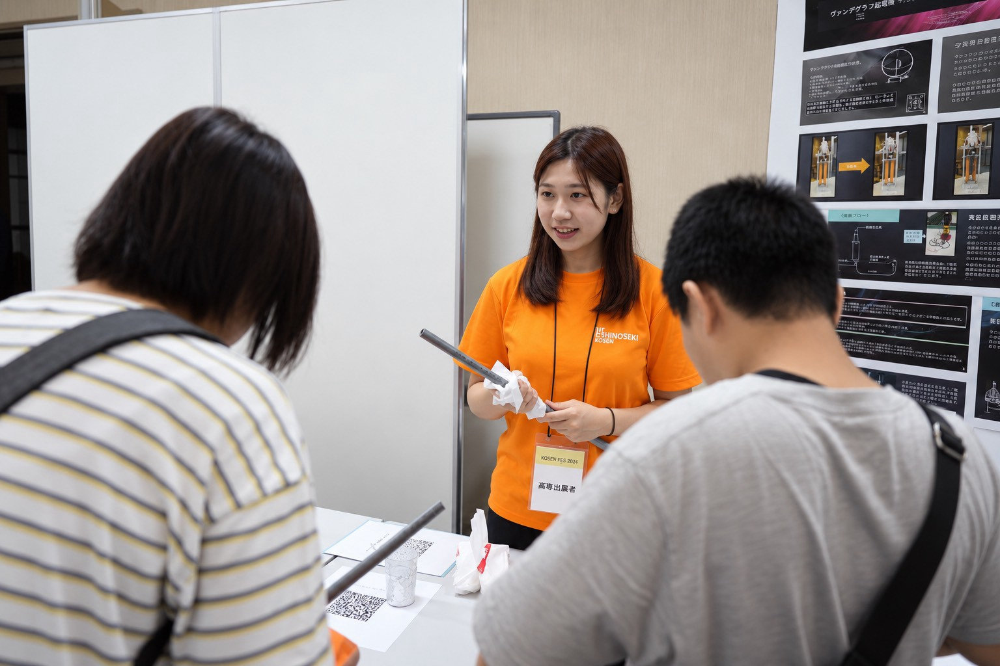
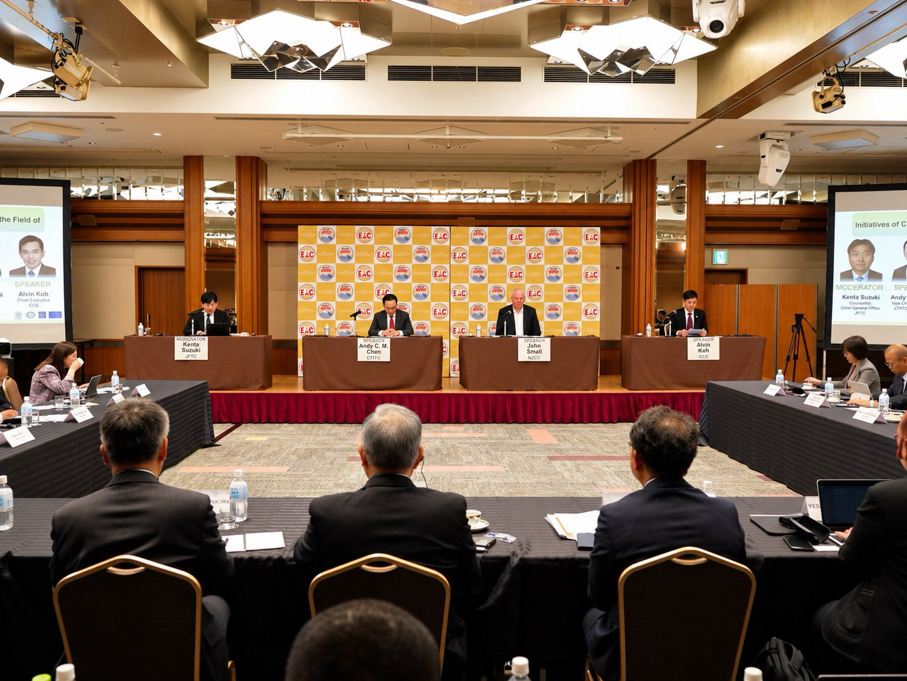
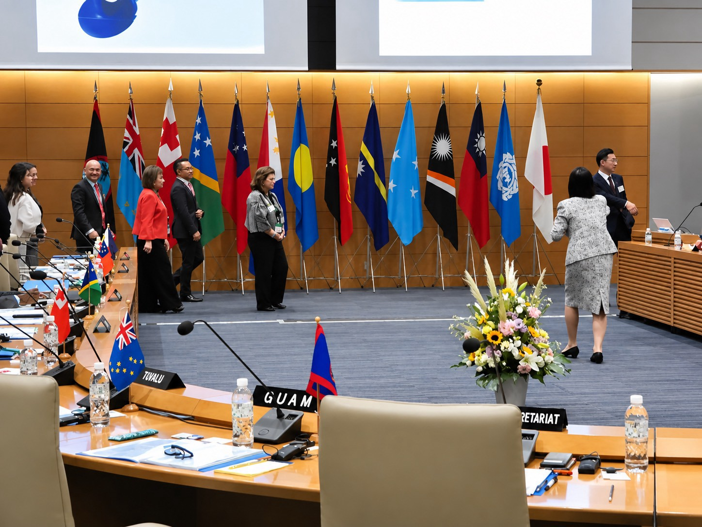
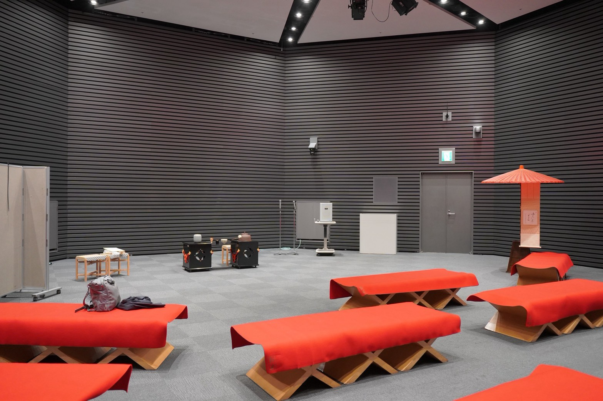
WHY GROWPAS
官公庁関連のセミナーやシンポジウム、展示会など、毎回異なるテーマ・会場のイベントに携わることができます。
接客力、対応力、チームワークはもちろん、テクニカルスタッフの場合は音響・映像・配信などの専門技術も実践的に学べます。
多くのスタッフと協力し、準備から本番、撤去までひとつのイベントをつくり上げます。無事にイベントを終えたときの達成感は、この仕事ならではです。
ご応募・お問い合わせは公式LINEより受け付けています。
「イベント運営スタッフ希望」または「テクニカルスタッフ希望」とお送りください。
まずは話を聞いてみたいという方も、お気軽にお問い合わせください。
※ 新サイトの問い合わせ先は接続準備中です。